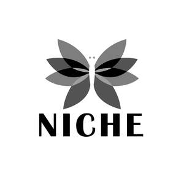
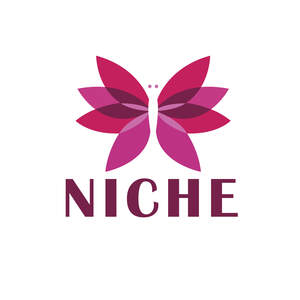
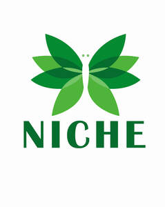

Trade Mark Journal No.2025/047 21 November 2025
UK00004293790 12 November 2025 (3,5)
Mark 1

Mark 2

Mark 3

- Class 3
- Beauty creams for body care; Toning lotion, for the face, body and hands; Beauty creams; Liquid soaps for hands and face; Beauty care cosmetics; Beauty serums; Beauty soap; Beauty balm creams; Body cleaning and beauty care preparations; Beauty gels; Beauty milk; Exfoliating scrubs for the hands; Beauty care preparations.Bleaching preparations and other substances for laundry use; cleaning, polishing, scouring and abrasive preparations; soaps; perfumery, essential oils, cosmetics, hair lotions; dentifrices; Fragrances; Perfumery and fragrances; Perfumes; Oils for perfumes and scents; Potpourris [fragrances]; Scents; Aromatics for fragrances; Colognes; Aromatics for perfumes; Perfume; Household fragrances; Fragrances for automobiles; Fragrance sachets; Body fragrances; Perfume oils; Extracts of perfumes; Room fragrances; Musk [perfumery]; Natural oils for perfumes; Fragrance emitting wicks for room fragrance; Extracts of flowers [perfumes]; Flowers (Extracts of -) [perfumes]; Extracts of flowers being perfumes; Fragrance preparations; Perfumery products; Liquid perfumes; Perfumes for ceramics; Aftershaves; Deodorants for personal use [perfumery]; Fragrance refills for non-electric room fragrance dispensers; Perfumeries; Cologne; Amber [perfume]; Cedarwood perfumery; Perfumery; Body deodorants [perfumery]; Perfumes for cardboard; Aftershave lotions; Geraniol for fragrancing; Scented soaps; Scented oils; Geraniol fragrancing compounds; Solid perfumes; Fragrances for personal use; Ionone [perfumery]; Vanilla perfumery; Perfumed potpourris; Perfumed soaps; Air fragrance preparations; Aftershave balms; Room perfume sprays; Synthetic perfumery; Fragrance sachets for eye pillows; After-shave lotions; Synthetic vanillin [perfumery]; Perfume water; Aromatherapy lotions; Essential oils as fragrances for laundry use; Skin fresheners [cosmetics]; Scented body lotions; Fumigation preparations [perfumes]; Scented sachets; Scented body lotions and creams; Air fragrance reed diffusers; Fragrance for household purposes; After-sun oils [cosmetics]; Heliotropin fragrancing compounds; Aromatic potpourris; Essential oils for use in the manufacture of scented products; Piperonal fragrancing compounds; Moisturisers [cosmetics]; Perfumed creams; After-shave balms; Skincare cosmetics; Mint for perfumery; Perfumed sachets; Aftershave creams; Scented linen sprays; Perfumery, essential oils; Room fragrancing products; Natural perfumery; Feminine deodorant sprays; Perfumed powders [for cosmetic use]; Aftershave; Suntan oils [cosmetics]; Roll-on deodorants [toiletries]; Pomanders [aromatic substances]; Suncare lotions; Scented body creams; Perfuming sachets; Eau de cologne [cologne water]; Aromatic oils; Scented oils used to produce aromas when heated; Eau de colognes; Peppermint oil [perfumery]; Tanning oils [cosmetics]; Beauty lotions; Perfumed powders; Suncare lotions [for cosmetic use]; Aromatherapy creams; Fragrant sachets; Room perfumes in spray form; Aromatherapy oils; Perfumed lotions [toilet preparations]; Perfumes for industrial purposes; After-shave creams; Aromatic oils for the bath; Cosmetics; Skin moisturizers used as cosmetics; Perfumed soap.
- Class 5
- Dietary supplements; Vitamin supplements; Vitamin tablets; vitamin capsules; Vitamin preparations; Vitamins and vitamin preparations; Vitamin B preparations; Vitamin C preparations; Vitamin D preparations; Mixed vitamin preparations; Vitamin A preparations; Multi-vitamin preparations; Preparations of vitamins; Vitamin and mineral supplements; Health food supplements made principally of vitamins; Vitamin preparations in the nature of food supplements; Dietary supplements; Food supplements; Nutritional supplements; Medicated food supplements; Protein dietary supplements; Casein dietary supplements; Dietary food supplements; Mineral food supplements; Anti-oxidant food supplements; Dietary and nutritional supplements; Dietary supplements for humans; Dietary supplements and dietetic preparations; Mineral dietary supplements for humans; Food supplements for dietetic use; Dietary supplements for medical use; Food supplements for medical purposes; Nutraceuticals for use as a dietary supplement; Health food supplements made principally of minerals; Herbal dietary supplements for persons special dietary requirements; Health food supplements for persons with special dietary requirements; Antioxidants; Antioxidant pills; Meal replacement powders; Digestive enzymes; Mineral supplements to foodstuffs; Vegan dietary supplements; Ashwagandha dietary supplements; Zinc dietary supplements; Selenium dietary supplements; Amino acid dietary supplements; Collagen dietary supplements; Turmeric dietary supplements; Curcumin dietary supplements; Ginger dietary supplements; Black pepper dietary supplements; Folic acid dietary supplements; Iron dietary supplements; Polysaccharides dietary supplements; Mushroom dietary supplements; Magnesium glycinate dietary supplements; Malate dietary supplements; Citrate dietary supplements; Milk thistle dietary supplements; Dandelion leaf dietary supplements; Artichoke dietary supplements; Creatine dietary supplements; Creatine powder; Powdered nutritional supplement drink mix; Bioavailable dietary supplements; Micronised dietary supplements; Prenatal vitamins; Gummy vitamins; Effervescent vitamin tablets; Colostrum supplements; Lecithin dietary supplements; Linseed dietary supplements; Propolis dietary supplements; Yeast dietary supplements; Glucose dietary supplements; Flaxseed dietary supplements; Enzyme dietary supplements; Alginate dietary supplements; Albumin dietary supplements; Linseed oil dietary supplements; Soy protein dietary supplements; Flaxseed oil dietary supplements; Wheat germ dietary supplements; Dietary supplements for infants; Pollen dietary supplements; Nutritional supplement meal replacement bars for boosting energy.
H & B SHOP LTD